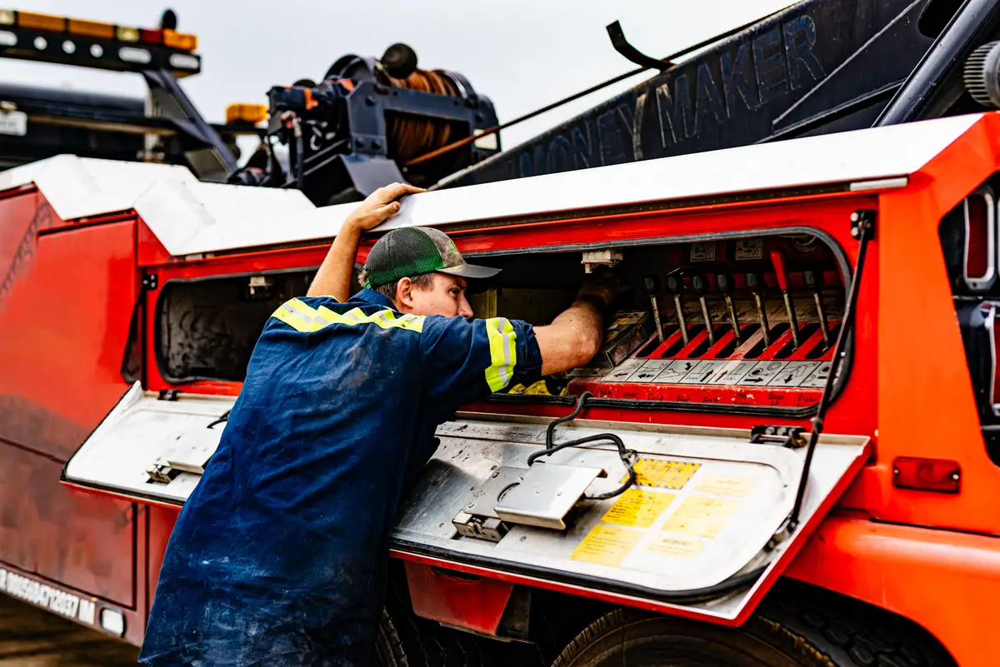

Company
Career Opportunities At Central Arkansas Truck And Trailer in Little Rock, AR

Career Opportunities At Central Arkansas Truck And Trailer in Little Rock, AR
Central Arkansas Truck and Trailer provides a professional shop where motivated individuals can build careers alongside experienced, prideful technicians.
Seeking a workplace that values skills, respects time, and offers career growth?
A career here means working in a well-equipped, organized facility that supports both productivity and safety. Our Little Rock location features 18 service bays across 35,000 square feet, providing employees with the space and tools needed to deliver quality work without unnecessary congestion or downtime.
Team members utilize modern diagnostic technology and proven repair processes similar to those at large dealerships, while still enjoying the friendly and supportive environment of a locally owned business. With an in-house transmission shop, employees also gain hands-on experience with complex transmission rebuilds and rear differential work—valuable skills that boost technical confidence and support career growth.
Operating hours are Monday through Friday, 7:00 AM to 5:00 PM, providing consistency and predictability for those seeking a stable schedule. Whether you’re experienced or still developing your skills, this workplace focuses on accountability, teamwork, and professional growth.
What Makes Working Here Different
Central Arkansas Truck and Trailer combines scale with a strong culture. You gain access to a large, professional facility without feeling like just another employee. Leadership stays approachable, communication is straightforward, and expectations are well-defined, fostering an environment where employees understand what success looks like.
Having an in-house transmission operation enables team members to broaden their technical skills beyond basic repairs. Coupled with a large bay count and consistent workflow, this fosters opportunities to learn, collaborate, and take pride in the daily work. The result is a shop that values both craftsmanship and the people behind it.
Contact Us About Careers Now: Call 501-568-2185!
If you’re ready to explore a new career opportunity, now is the time to take the next step. Call 501-568-2185 to learn about current openings, expectations, and what working at Central Arkansas Truck and Trailer is really like. A direct conversation can help you decide if this is the right move for you.
Open Positions
We post new positions regularly on our website.
No Current Openings.
Think you'd be a good fit? Contact our team at nathan.dunn@cenarktruck.com.